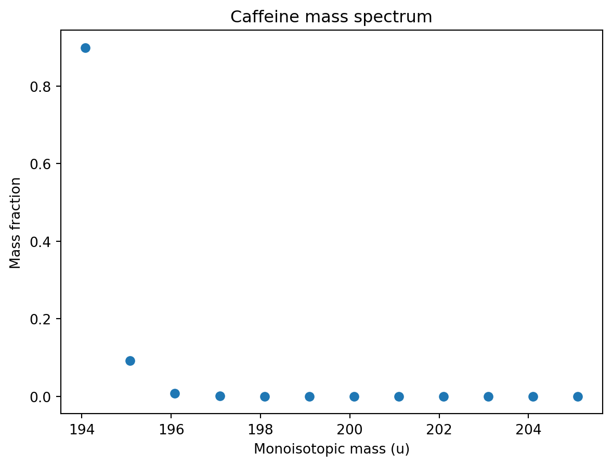

import molmass
import numpy as np
import pandas as pd
import sysPython for High Resolution Mass Spectrometry
Learn to code, code to learn.
An initial search for python packages to analyze high resolution mass spectrometry data, I found a few that seem rather useful. I will quickly explore them below.
molmass
The molmass package can be installed from the Python package index: https://pypi.org/project/molmass/.
Warning
The latest version of molmass requires Python version 3.8.
You can check your version of a package with the .__version__ attribute. The latest version is ‘2022.12.9’.
print(sys.version)3.10.19 (main, Oct 10 2025, 01:01:37) [GCC 13.3.0]print(molmass.__version__)2025.4.14Let’s explore the properties of caffeine as detailed in the code example.
from molmass import Formula
f = Formula('C8H10N4O2') # Caffeine
fFormula('C8H10N4O2')And look up the average, nominal and monoisotopic mass.
f.mass # average mass194.19095199999998f.nominal_mass # == f.isotope.massnumber in previous package version194f.monoisotopic_mass # == f.isotope.mass in previous package version194.08037557916f.composition().dataframe()| Count | Relative mass | Fraction | |
|---|---|---|---|
| Element | |||
| C | 8 | 96.085920 | 0.494801 |
| H | 10 | 10.079410 | 0.051905 |
| N | 4 | 56.026812 | 0.288514 |
| O | 2 | 31.998810 | 0.164780 |
Next, let’s compute the mass spectrum for caffeine for all the different isotope combinations.
df = f.spectrum().dataframe()
df| Relative mass | Fraction | Intensity % | m/z | |
|---|---|---|---|---|
| Mass number | ||||
| 194 | 194.080376 | 8.988278e-01 | 1.000000e+02 | 194.080376 |
| 195 | 195.082873 | 9.262511e-02 | 1.030510e+01 | 195.082873 |
| 196 | 196.084968 | 8.021964e-03 | 8.924917e-01 | 196.084968 |
| 197 | 197.087214 | 5.004776e-04 | 5.568114e-02 | 197.087214 |
| 198 | 198.089410 | 2.370420e-05 | 2.637235e-03 | 198.089410 |
| 199 | 199.091577 | 9.094718e-07 | 1.011842e-04 | 199.091577 |
| 200 | 200.093769 | 2.738857e-08 | 3.047143e-06 | 200.093769 |
| 201 | 201.095939 | 6.190814e-10 | 6.887653e-08 | 201.095939 |
| 202 | 202.098016 | 1.031659e-11 | 1.147783e-09 | 202.098016 |
| 203 | 203.099952 | 1.265261e-13 | 1.407679e-11 | 203.099952 |
| 204 | 204.101915 | 1.092906e-15 | 1.215924e-13 | 204.101915 |
| 205 | 205.104365 | 4.529557e-18 | 5.039404e-16 | 205.104365 |
Let’s plot the the mass spectrum…
import matplotlib.pyplot as pltCode
fig, ax = plt.subplots()
ax.scatter(df['Relative mass'], df['Fraction'])
ax.set_xlabel('Monoisotopic mass (u)')
ax.set_ylabel('Mass fraction')
ax.set_title('Caffeine mass spectrum');
Here is also the mass spectrum for the different isotopes of iron.
Fe = Formula('Fe')Fe.spectrum().dataframe()| Relative mass | Fraction | Intensity % | m/z | |
|---|---|---|---|---|
| Mass number | ||||
| 54 | 53.939609 | 0.05845 | 6.370294 | 53.939609 |
| 56 | 55.934936 | 0.91754 | 100.000000 | 55.934936 |
| 57 | 56.935393 | 0.02119 | 2.309436 | 56.935393 |
| 58 | 57.933274 | 0.00282 | 0.307344 | 57.933274 |
CH2 = Formula('CH2')
CH2.monoisotopic_mass14.01565006446pyhrms
Need to look into this.
pymzml
Need to look into this.
See: https://pypi.org/project/pymzml/
This seems to be an important package. Here is the documentation: https://pymzml.readthedocs.io/en/latest/